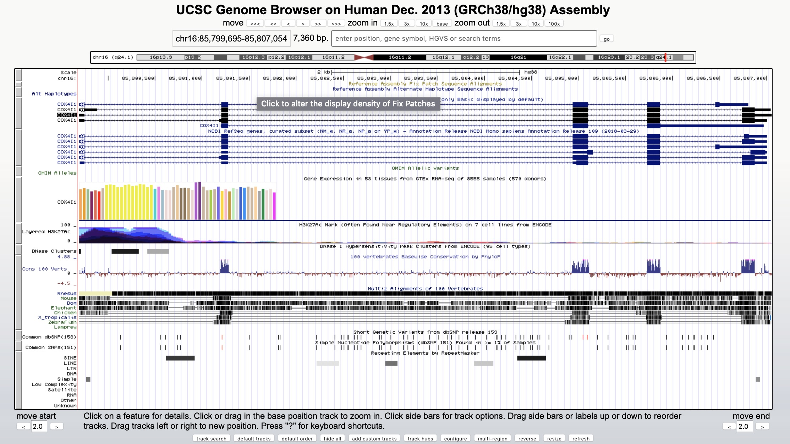

UCSC¶
Il browser UCSC è un altro browser genomico molto diffuso, probabilmente più di ENSEMBL.
Il sito per accedere a questo browser è: http://genome.ucsc.edu.

Selezioniamo il Genome browser dalla lista Our tools. Nella casella position o gene oltre alle coordinate genomiche si può inserire il nome del gene.
La pagina risultante riporta tutti i geni in UCSC che corrispondono al nostro criterio di ricerca.
Come si vede, è possibile ottenere informazioni relativamente ad un intero cromosoma o ad una regione specifica definendola sulla base delle coordinate, della vicinanza ad un marcatore, del contenuto informazionale, ecc.
Proviamo a cercare COX4I1.

Per il gene otteniamo un’ampia rappresentazione grafica delle caratteristiche relative alla regione genomica che lo contiene.
Tra le informazioni riportate vi sono:
le posizioni degli esoni;
le regioni ipersensibili alla DNAsi;
la conservazione nell’ambito dei mammiferi;
la disponibilità di ortologhi;
gli elementi ripetuti;
le posizioni degli SNPs.

Se vogliamo estrarre delle specifiche informazioni per una data regione, possiamo selezionare la voce “Table” per selezionare il “Table Browser”.

Ad esempio, possiamo estrarre le coordinate genomiche e le caratteristiche degli elementi genici (esoni, introni e CDS).
Il formato normalmente utilizzato è un formato tabellare, importabile in Excel denominato GTF. Ma è anche possibile ottenere moltissime altre informazioni di vario genere.
COVID-19 Pandemic Resources at UCSC¶
Anche su UCSC è disponibile una risorsa dedica al SARS-COV-2, chiamata **COVID-19 Pandemic Resources at UCSC **.
.
Proviamo ad utilizzare il genome browser. Nella sezione Comparative Genomics attiviamo le seguenti track in modalità full:
- 119 Vertebrate CoVs;
- Human CoV.
*Cosa notate?
Back to the top